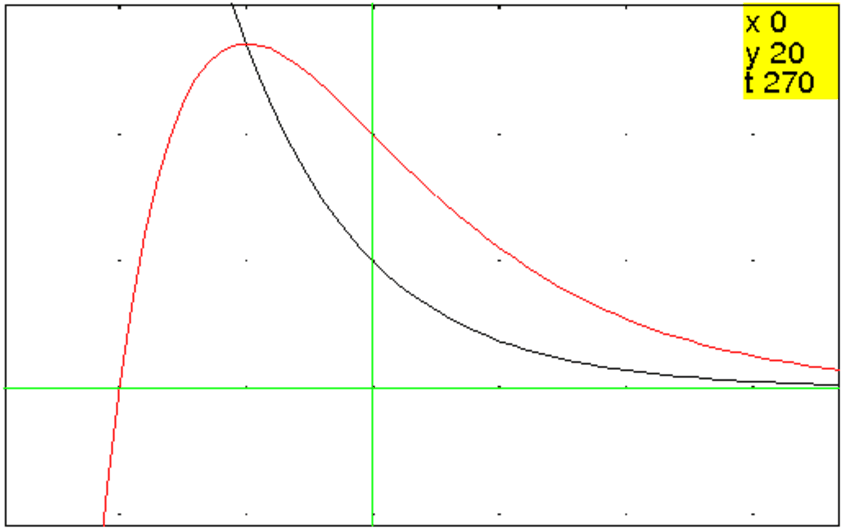
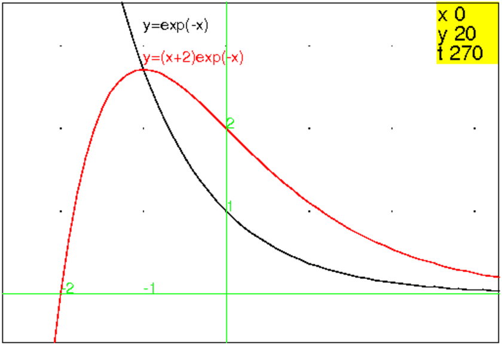

Retour à la page personnelle de Bernard Parisse.Chapitre 11 Le Bac Mathématiques 2010
11.1 EXERCICE 1 : (6 points)
Commun à tous les candidats
Les deux parties de cet exercice sont indépendantes.
Partie A :
On considère l’équation différentielle (E) : y′+y=e−x
-
Montrer que la fonction u définie sur l’ensemble des nombres réels
ℝ par u(x)=xe−x est une solution de l’équation différentielle (E)
- On considère l’équation différentielle (E′) : y′+y=0.
Résoudre l’équation différentielle (E′).
- Soit v une fonction définie et dérivable sur ℝ. Montrer que la
fonction v est une solution de l’équation différentielle (E) si et
seulement si la fonction v−u est solution de l’équation différentielle
(E′).
- En déduire toutes les solutions de l’équation différentielle (E).
- Déterminer l’unique solution g de l’équation différentielle (E)
telle que g(0)=2.
.
Partie B :
On considère la fonction fk définie sur l’ensemble ℝ des nombres
réels par fk(x)=(x+k)e−x où k est un nombre réel donné.
On note Ck la courbe représentative de la fonction fk dans un repère
orthogonal.
-
Montrer que la fonction fk admet un maximum en xk=1−k.
- On note Mk le point de la courbe Ck d’abscisse 1−k. Montrer que
le point Mk appartient à la courbe Γ d’équation y=e−x.
- Sur le graphique ci-dessous (à rendre avec la copie), le
repère est orthogonal mais l’unité sur l’axe des abscisses et sur l’axe
des ordonnées ainsi que les noms des courbes n’apparaissent pas. Sur ce
graphique, on a tracé deux courbes :
-
• la courbe d’équation y=e−x ;
- • la courbe Ck d’équation y=(x+k)e−x pour un
certain nombre réel k donné.

-
a) Identifier les courbes et les nommer sur l’annexe 1
(à rendre avec la copie).
- b) En expliquant la démarche utilisée, déterminer la
valeur du nombre réel k correspondante ainsi que l’unité graphique sur
chacun des axes.
- À l’aide d’une intégration par parties, calculer
∫01(x+2)e−xdx.
Donner une interprétation graphique de cette intégrale.
11.1.2 Le corrigé avec Xcas
Partie A
-
On tape :
u(x):=x*exp(-x)
normal(diff(u(x))+u(x))
On obtient :
exp(-x)
Donc u′(x)+u(x)=exp(−x) ce qui veut dire que u(x) est une
solution de l’équation différentielle (E) (y′+y=e−x). - On tape :
desolve(y’+y)
On obtient :
c_0*exp(-x)
Donc (E′) (y′+y=0) a comme solution y(x)= c01/exp(x).
- On tape :
normal(diff(v(x)-u(x))+v(x)-u(x))
On obtient :
diff(v(x),x)-exp(-x)+v(x)
Donc
v′(x)−u′(x)+v(x)−u(x)+0 est équivalent à v′(x)+v(x)=exp(−x).
Cela veut dire :
u++v est solution de (E′) est équivalent à v est solution de (E) - On tape :
desolve(y’+y=exp(-x))
On obtient :
c_0*exp(-x)+x*exp(-x)
c’est à dire la somme de u(x) et de la solution générale de y′+y=0.
Donc (E) a comme solution y(x)= u(x)+c01/exp(x). - On tape :
desolve([y’+y=exp(-x),y(0)=2],y)
On obtient :
[2*exp(-x)+x*exp(-x)]
ou bien
On tape :
solve(c_0*exp(0)=2,c_0)
On obtient :
[2]
Donc l’unique solution g de (E) (y′+y=e−x)
telle que g(0)=2 est la fonction
g(x)=(x+2)/exp(x)=(x+2)e−x.
Partie B
-
On tape :
f(x,k):=(x+k)*exp(-x)
factor(diff(f(x,k),x))
On obtient :
(-x-k+1)*exp(-x)
Donc f a un maximum en x=1−k car −x+1−k>0 si x<1−k.
- On tape :
normal(f(1-k,k)
On obtient :
exp(k-1)
Donc Mk est sur Ck et sur Γ car ses coordonnées vérifient :
yk=exp(−xk)
-
a) Identifier les courbes et les nommer sur l’annexe 1
(à rendre avec la copie).
- b) En expliquant la démarche utilisée, déterminer la
valeur du nombre réel k correspondante ainsi que l’unité graphique sur
chacun des axes.
On reconnait facilement la courbe y=e−x car la fonction e−x est
décroissante et n’admet pas de maximum. De plus pour cette courbe passe par
le point (0,1) donc on en déduit l’unité sur l’axe des y.
La courbe y=(x+k)e−x coupe l’axe des y au point (0,k) et l’axe des x
au point (−k,0).
Or sur le dessin cette courbe passe par le point (0,2).
Donc on en déduit que k=2. On trouve ainsi les unités sur l’axe des x :
on place x=−k=−2 et on vérifie que pour x=1−k=−1 la courbe y=(x+k)e−x
admet un maximum qui se trouve sur la courbe y=e−x.
- On tape :
int(f(x,2),x=0..2)
On obtient :
-5*exp(-2)+3
ou bien, on tape :
ibpu(f(x,2),x+2,x,0,2)
On obtient :
[-4*exp(-2)+2,exp(-x)]
on tape :
normal(ibpu([-4*exp(-2)+2,exp(-x)],0,x,0,2))
On obtient :
-5*exp(-2)+3
11.2 EXERCICE 2 : (5 points)
Commun à tous les candidats
-
Restitution organisée de connaissances.
Démontrer à l’aide de la définition et des deux propriétés ci-dessous
que si (un) et (vn) sont deux suites adjacentes, alors elles sont
convergentes et elles ont la même limite.
Définition : deux suites sont adjacentes lorsque l’une est
croissante, l’autre est décroissante et la différence des deux converge
vers 0.Propriété 1 : si deux suites (un) et (vn) sont adjacentes avec
(un) croissante et (vn) décroissante alors, pour tout entier naturel
n, vn > un .
Propriété 2 : toute suite croissante et majorée converge ; toute
suite décroissante et minorée converge.
Dans la suite de cet exercice, toute trace de recherche, même incomplète, ou d’initiative même non fructueuse, sera prise en compte dans l’évaluation.
- Dans les cas suivants, les suites (un) et (vn) ont-elles la même
limite ? Sont-elles adjacentes ? Justifier les réponses.
-
a) un=1−10−n et vn=1+10−n ;
- b) un=ln(n+1) et v=ln(n+1)+1/n ;
- c) un=1−1/n et vn=1+(−1)n/n .
- On considère un nombre réel a positif et les suites (un) et
(vn) définies pour tout nombre entier naturel n non nul par :
un=1−1/n et vn=ln(a+1/n)
.
Existe-t-il une valeur de a telle que les suites soient adjacentes ?
11.2.2 Le corrigé avec Xcas
-
-
a) un=1−10−n et vn=1+10−n
On a :
un+1−un=1−10−n−1−1+10−n=10−n(1−1/10)>0
Donc un est croissante.
vn+1−vn=10−n−1−10−n=10−n(1/10−1)<0
Donc vn est décroissante.
vn−un=1+10−n−1+10−n=2*10−n
Donc vn−un converge vers 0.
Les deux suites un et vn sont donc adjacentes.
On tape :
u(n):=1-1/10^n
normal(u(n+1)-u(n))
On obtient :
(10^(n+1)-10^n)/(10^(n+1)*10^n)
On tape :
v(n):=1+1/10^n
normal(v(n+1)-v(n))
On obtient :
(-10^(n+1)+10^n)/(10^(n+1)*10^n)
On tape :
normal(v(n)-u(n))
On obtient :
2/(10^n)
- b) un=ln(n+1) et v=ln(n+1)+1/n
Dans cet exercice Xcas ne sert pas à grand chose si ce n’est a
voir que vn est croissante pour n≥ 2 car la fonction
ln(x+1)+1/x est croissante pour x≥ 1/2(1+√(5)).
On tape :
normal(diff(ln(x+1)+1/x))
On obtient :
(x^2-x-1)/(x^3+x^2)
On tape :
solve(x^2-x-1)
On obtient :
[1/2*(1-sqrt(5)),1/2*(1+sqrt(5))]
Sinon on a :
un est croissante car la fonction ln(x+1) est croissante.
un et vn sont divergentes car elles tendent
vers +∞ quand n tend vers +∞ :
Donc vn n’est donc pas décroissante car sinon elle serait décroissante
et minorée par 0 donc convergente.
Donc les suites un et vn ne sont pas adjacentes.
- c) un=1−1/n et vn=1+(−1)n/n
un est croissante et converge vers 1.
vn=1+(−1)n/n converge vers 1 mais vn n’est pas monotone.
Donc un et vv ne sont pas adjacentes.
- un=1−1/n et vn=ln(a+1/n) pour a ≥ 0
On a :
un est croissante et converge vers 1
vn est décroissante et converge vers ln(a)
un−vn=1−1/n−ln(a+1/n) converge vers 1−ln(a).
Pour que un et vn soient adjacentes il faut et il suffit que
un−vn=1−1/n−ln(a+1/n) converge vers 0 donc il faut et il
suffit que ln(a)=1 ou a=e.
11.3 EXERCICE 3 : (4 points) Commun à tous les candidats
Cet exercice est un questionnaire à choix multiple (QCM).
Pour chaque question, trois réponses sont proposées, une seule est exacte. Le candidat portera sur la copie, sans justification, le numéro de la question suivi de la réponse choisie. Il est attribué un point sila réponse est exacte, aucun point n’est enlevé pour une réponse
inexacte ou une absence de réponse.
-
Une urne contient 10 boules indiscernables au toucher : 7 sont blanches
et 3 sont noires. On tire simultanément 3 boules de l’urne. La probabilité
de tirer 2 boules blanches et 1 boule noire est égale à :
• 21/40 • 7/10×6/9×1/3 • 7/10×7/10×1/3
- De la même urne, on tire une boule, on note sa couleur, on la remet
dans l’urne ; on procède ainsi à 5 tirages successifs avec remise.
La probabilité d’avoir obtenu 3 boules noires et 2 boules blanches est
égale à :
• 33×72/105
• C52×(3/10)2×(7/10)3
• C52×(3/10)3×(7/10)2
- De la même urne, on tire une seule boule. Si elle est blanche, on lance
un dé cubique (dont les faces sont numérotées de 1 à 6). Si la boule
est noire, on lance un dé tétraédrique (dont les faces sont
numérotées de 1 à 4). On suppose les dés bien équilibrés. Le joueur
gagne s’il obtient le numéro 1.
Sachant que le joueur a gagné, la probabilité qu’il ait tiré une boule
blanche est égale à :
• 7/60 • 14/23
• 7/10×1/6/ 1/2× 1/6+1/2× 1/4
- On note X une variable aléatoire qui suit une loi exponentielle de
paramètre λ, (λ étant un nombre réel strictement positif).
La probabilité de l’événement [1≤ X ≤ 3] est égale à :
• e−λ−e−3λ
• e−3λ−e−λ
• e−λ/e−3λ
11.3.2 Le corrigé avec Xcas
-
On tape :
comb(7,2)*3/comb(10,3)
On obtient :
21/40
- On tape :
comb(5,2)*(3/10)^3*(7/10)^2
On obtient :
1323/10000
- On tape :
7/10*1/6/(7/10*1/6+3/10*1/4)
On obtient :
14/23
- On tape :
assume(a>0);
normal(a*int(exp(-a*x),x,1,3))
On obtient :
-exp(-3*a)+exp(-a)
11.4 EXERCICE 4 : (5 points)
Candidats ayant suivi l’enseignement de spécialité
Dans tout l’exercice, (O;u,v) est un
repère orthonormal direct du plan complexe (unité graphique : 4 cm).
On désigne par A le point d’affixe zA = 1.
-
On considère la transformation T du plan qui, à tout point M
d’affixe z, associe le point d’affixe −z+2 .
-
a) Déterminer les images respectives par la transformation T du
point A et du point Ω d’affixe 1+i√3 .
- b) En déduire la nature et les éléments caractéristiques de la
transformation T.
- c) Déterminer l’image par la transformation T du cercle (c) de
centre O et de rayon 1.
- (c′) désigne le cercle de centre O′ d’affixe 2 et de rayon 1.
-
a) Construire le point A′ appartenant au cercle (c′) tel que :
OA,O′A′=π/3 [modulo 2π].
- b) À tout point M du cercle (c) d’affixe z, on associe le
point M′ du cercle (c′) d’affixe z′ tel que :
OM,O′M′=π/3 [modulo 2π].
Déterminer le module et un argument de z′−2/z.
En déduire que z′=eiπ/3z+2.
- c) Préciser la nature et les éléments caractéristiques de la
transformation r qui à tout point M du plan d’affixe z associe le point
M′ d’affixe z′ telle que z′=ei π/3z+2.
- Dans cette question, toute trace de recherche, même incomplète, ou d’initiative, même non fructueuse, sera prise en compte dans l’évaluation.
À tout point M du plan, on associe le point I milieu du
segment [MM′].
Quel est le lieu géométrique du point I lorsque M décrit le cercle
(c) ?
11.4.2 Le corrigé avec Xcas
-
T(z)=−z+2
-
a) T(A)=T(1) et T(Ω)=T(1+i√3)
On tape (il faut cocher Variables_complexes dans la configuration du CAS):
T(z):=-conj(z)+2
T(1)
On obtient :
1
On tape :
normal(T(1+i*sqrt(3)))
On obtient :
(i)*sqrt(3)+1
- b) Éléments caractéristiques de T.
T a deux points fixes A et Ω. T est donc la symétrie droite par
rapport à la droite AΩ c’est à dire par rapport à la droite x=1.
On tape :
d:=droite(x=1):;
equation(T(d))
On obtient :
x=1
- c) T(c) où (c) est le cercle de centre O et de rayon 1.
On tape :
c:=cercle(0,1):;
equation(T(c))
On obtient :
(x-2)^2+y^2=1
En effet la symétrie conserve les distance. Donc c se transforme en un
cercle de même rayon ayant pour centre le transformé de O par T. Le
centre O de c est transformé an le point O′ de coordonnées (2,0).
Donc T(c) est le cercle c′ de centre O′ et de rayon 1.
-
a)
A′ est l’intersection du cercle c′ avec le cercle de centre d’affixe 3 et
de rayon 1 se trouvant dans le demi-plan y>0.
Le point A a pour affixe 1 et le point A′ a pour affixe 2+exp(iπ/3)
On tape :
A1:=point(2+exp(i*pi/3))
affixe(A1)
On obtient :
5/2+((i)*sqrt(3))/2
Ou on tape dans un niveau de géométrie:
c1:=cercle(2,1);
d1:=droite(2,3+i*sqrt(3));
A1:=inter(c1,d1)[0]
affixe(A1)
On obtient :
((i)*sqrt(3)+5)/2
- b) Si le point M a pour affixe : z=exp(it), alors le point M′ a pour
affixe z′=2+exp(i(t+π/3)).
Donc z′−2/z=exp(iπ/3)=(1+i*√3)/2
z′−2/z a donc pour module 1 et comme argument π/3.
On tape :
z:=exp(i*t)
z1:=2+exp(i*t+i*pi/3)
normal((z1-2)/z)
On obtient :
((i)*sqrt(3)+1)/2 - c) r est le produit d’une rotation d’angle fracπ3 et d’une translation : c’est donc une rotation d’angle fracπ3 et de centre le point fixe
On tape :
csolve(z=exp(i*pi/3)*z+2,z)
On obtient :
[4/((-i)*sqrt(3)+1)]
- On tape :
normal((z1+z)/2)
On obtient :
((i)*sqrt(3)+3)/4*exp((i)*t)+1
Donc le milieu I de MM′ se trouve sur le cercle de centre d’affixe 1 et de
rayon le module de i√3+3)/4
On tape :
abs((i*sqrt(3)+3)/4)
On obtient :
2*sqrt(3)/4
Retour à la page personnelle de Bernard Parisse.